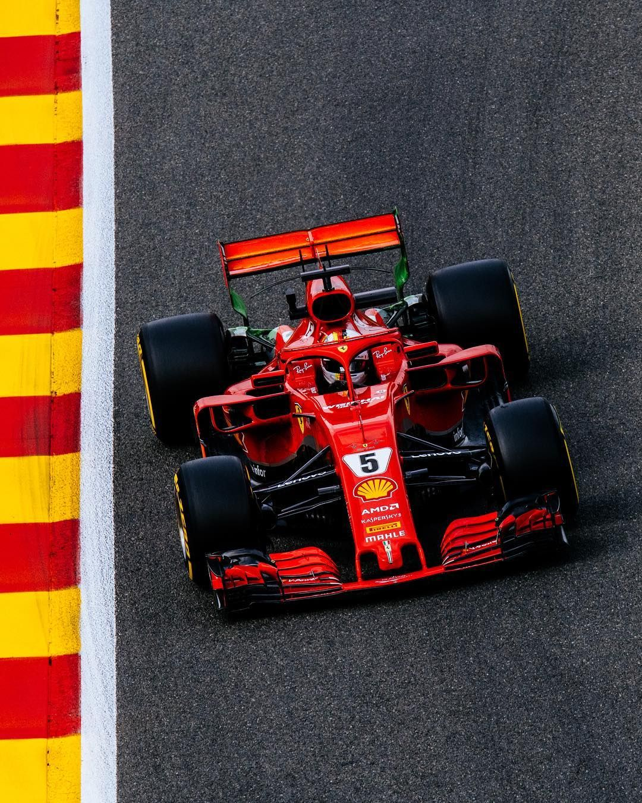

Scruderia Ferarri Formula 1
Ferrari pertama kali berkompetisi di F1 pada musim 1948 dengan menggunakan mobil F1 pertama mereka, Tipo 125 F1. Hal ini membuat Ferrari menjadi tim tertua dan paling sukses yang berlaga di kompetisi jet darat. Pembalap mereka
saat ini adalah Charles Leclerc dan Carlos Sainz, Jr.. Masa jaya Ferrari adalah pada tahun 2000-2004 yang saat itu diperkuat oleh legenda hidup F1 asal Jerman, Michael "Schumi" Schumacher. Presiden Ferrari saat ini adalah John
Elkann, dengan team principal Mattia Binotto. Tim ini dijuluki sebagai "tim kuda jingkrak", dan di Italia, tim ini sudah seperti agama, yaitu tak memandang bulu dari mana mereka berasal, apakah dari Roma, Milan, atau Turin,
semua hanya satu tujuan yaitu demi kemenangan Ferrari. Pembalap-pembalap terkenal seperti Alberto Ascari, Juan Manuel Fangio, Mike Hawthorn, Phil Hill, John Surtees, Niki Lauda, Jody Scheckter, sang legenda Michael "Schumi"
Schumacher, hingga Kimi Raikkonen, berhasil meraih gelar juara dunia bersama dengan tim ini. Ferrari juga pernah diperkuat oleh Giuseppe "Nino" Farina, Jose Froilan Gonzalez, Gilles Villeneuve, Didier Pironi, Nigel Mansell,
Alain Prost, Eddie Irvine, Rubens Barrichello, Felipe Massa, Fernando Alonso, hingga Sebastian Vettel, kendati mereka tidak meraih gelar juara dunia bersama dengan tim ini.
Profile Driver

Charles Leclerc
Charles Leclerc lahir 16 Oktober 1997, Monte Carlo, Monako) adalah seorang pembalap profesional Monégasque, saat ini membalap di Kejuaraan Dunia Formula Satu FIA 2022 untuk Ferrari , setelah berkompetisi untuk Sauber pada
tahun 2018 . Sebagai anggota Akademi Pembalap Ferrari dan Juara bertahan Formula 2 FIA , Leclerc adalah salah satu pembalap muda berperingkat tertinggi di era saat ini, yang sebelumnya telah menguji Scuderia, Haas , dan
perusahaan Sauber 2018.
Leclerc memulai dengan karting pada usia delapan tahun, merebut enam gelar kategori junior dalam lima musim di Prancis dan Monako. Leclerc akan finis satu untuk finis sebagai runner up Max Verstappen di Kejuaraan KZ Dunia
CIK-FIA pada 2013, tahun terakhirnya di go-kart. Pembalap Monégasque juga akan menjalin persahabatan penting dengan Jules Bianchi selama karir kartingnya. Leclerc pada tahun 2014, memasuki Formula Renault 2.0 Alps , mengakhiri
musim sebagai Juara Junior dan runner-up secara keseluruhan. Usahanya membuatnya mendapat tempat di Kejuaraan Eropa Formula 3 FIA untuk 2015, mengambil tiga kemenangan untuk finis keempat secara keseluruhan, di belakang
Champion Lance Stroll. Monégasque kemudian dipindahkan ke Seri GP3 untuk 2016, merebut gelar mayor pertamanya di mobil balap di akhir musim dengan tiga kemenangan. Pendakian Leclerc yang cepat menaiki tangga motorsport
berlanjut hingga 2017, dengan pembalap Monégasque itu bergabung dengan sesama jagoan Akademi Ferrari Antonio Fuoco di FIA Formula 2 Championship. Ini akan menjadi tampilan yang luar biasa dari anak muda sepanjang musim, karena
Leclerc mendominasi kualifikasi sepanjang paruh pertama musim, meraih lima kemenangan sebelum liburan musim panas. [6] Dua kemenangan selanjutnya membuatnya mengakhiri musim sebagai Juara di musim debutnya di seri tersebut,
menempatkannya di posisi utama untuk mendapatkan kursi di Formula Satu . Performa Leclerc di tahun 2017 menjadi semakin luar biasa mengingat kematian ayahnya Hervé, yang telah membimbing karirnya hingga debutnya di Formula 3.
Carlos Saint Jr
Carlos Sainz Vázquez de Castro (lahir 1 September 1994 di Madrid, Spanyol), umumnya dikenal sebagai Carlos Sainz, Jr., adalah pembalap yang membuat debut Formula Satu untuk Toro Rosso pada tahun 2015, bersama Max Verstappen ,
yang juga membuat debutnya. Mulai dari Grand Prix Amerika Serikat 2017, dia membalap untuk Renault. Dia kemudian pindah ke McLaren pada 2019, lalu Ferrari pada 2021. Carlos Sainz Vázquez de Castro (lahir 1 September 1994 di
Madrid, Spanyol), umumnya dikenal sebagai Carlos Sainz, Jr., adalah pembalap yang membuat debut Formula Satu untuk Toro Rosso pada tahun 2015, bersama Max Verstappen, yang juga membuat debutnya. Mulai dari Grand Prix Amerika
Serikat 2017, dia membalap untuk Renault. Dia kemudian pindah ke McLaren pada 2019, lalu Ferrari pada 2021.
Sainz dengan cepat menunjukkan semangat juangnya. Pembalap yang ulet, dia menempatkan mobilnya di tepi saat dia bergegas melewati kawanannya. Tak heran jika Sainz mendapat julukan Chilli. Tapi pembalap Spanyol itu cerdas dan
juga naluriah, memikirkan jalannya balapan dan meraih poin. Temperamen yang tenang ini mengikutinya keluar jalur di mana dia tetap tidak terpengaruh oleh tekanan menempa karir Grand Prix dengan nama terkenal. Sainz adalah
putra dari juara World Rally ganda, juga senama, dan telah membawa beberapa keterampilan mengemudi Ayah ke sirkuit F1 junior menyukai takaran drift yang enak untuk salah satunya. Setelah mengikuti jejak ban ayahnya yang
terkenal, Sainz harus mengisi sepatu balap besar pertama di McLaren di mana ia menggantikan pahlawan masa kecilnya Fernando Alonso, dan sekarang di Ferrari, di kursi yang sebelumnya dimiliki oleh Sebastian Vettel. Tidak pernah
mudah hidup dalam bayang-bayang raksasa olahraga, tetapi Sainz telah menunjukkan dorongan dan disposisi untuk menghadapinya, dan pada tahun 2022 ia meraih kemenangan perdananya di F1 dengan kemenangan di Silverstone
Scuderia Ferarri Statistics

| ENTRIES |
1052 |
| Starts |
1052 |
| Best Finish |
1 |
| Best Grid |
1 |
| Best Rank |
1 |
| Wins |
242 |
| Pole 1 and 2 |
84 |
| Hat Tricks |
87 |
| Average Win/Season |
3.32 |
| PODIUMS |
795 |
| Average Podiums/Season |
10.89 |
| FASTEST LAPS |
259 |
| POINTS |
8942 |
| Points Finishes |
859 |
| Points By Drivers |
10170.92 |
| Average Points/Season |
122.49 |